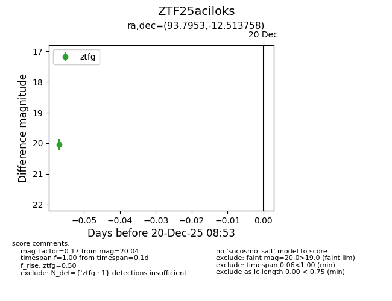
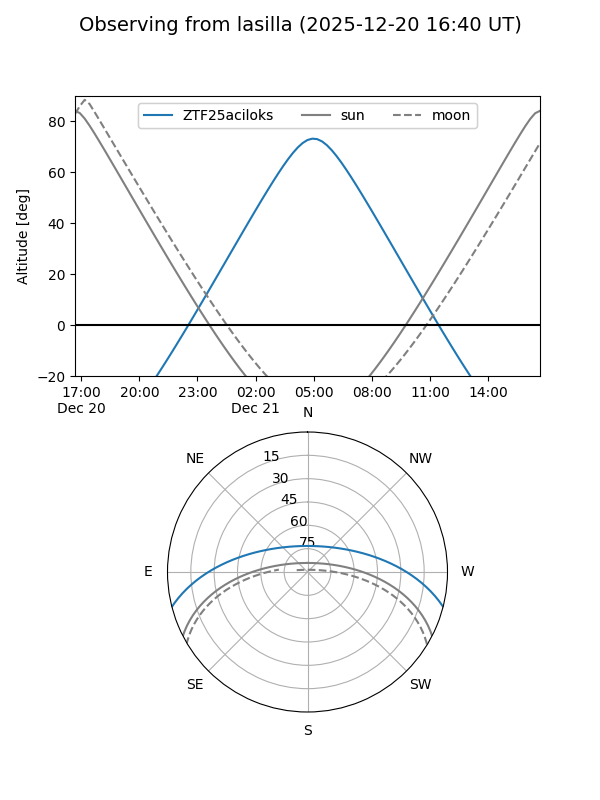
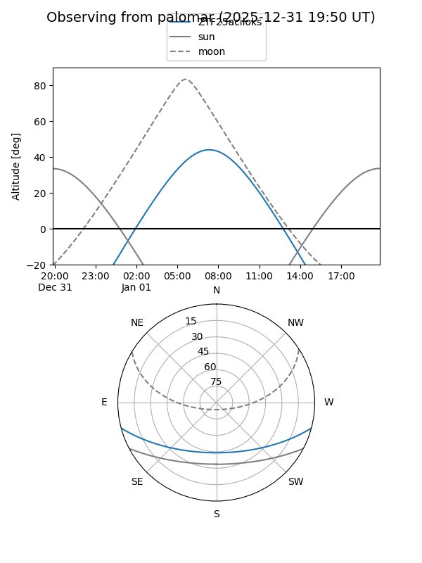

ZTF25aciloks
Target ZTF25aciloks at 2025-12-20 08:54
Aliases and brokers:
FINK: fink-portal.org/ZTF25aciloks
Lasair: lasair-ztf.lsst.ac.uk/objects/ZTF25aciloks
ALeRCE: alerce.online/object/ZTF25aciloks
alt names
ZTF25aciloks (ztf,fink_ztf)
Coordinates:
equatorial (ra, dec) = 93.7953,-12.51376
equatorial (HMS+DMS) = 06:15:10.87,-12:30:49.53
galactic (l, b) = (220.1857,-13.63160)
Flags:
Photometry:
last ztfg=20.04
1 ztfg detections
Lightcurve

Visibility


Additional plots